{kind=link}
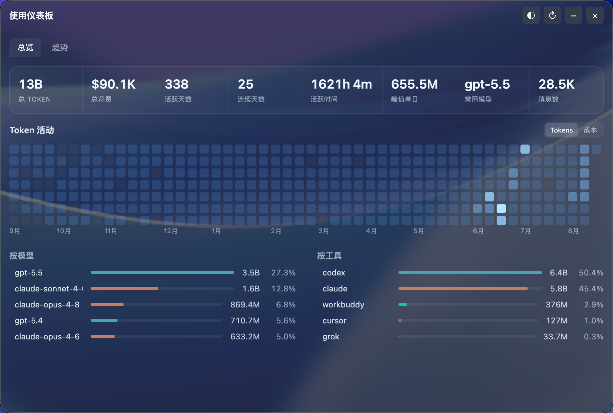
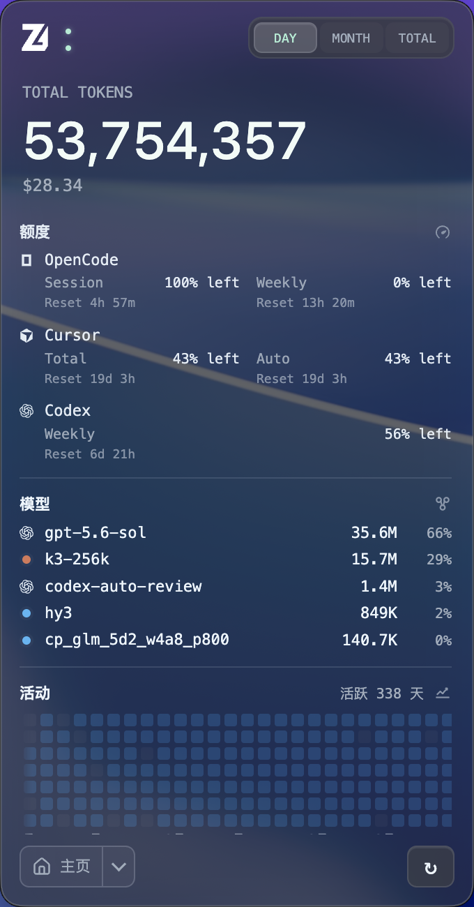
ZT Monitor 自动汇总 Claude Code、Codex、Cursor、GitHub Copilot 等工具的 Token、成本、缓存命中与账户额度。电脑端实时采集，手机端随时查看。


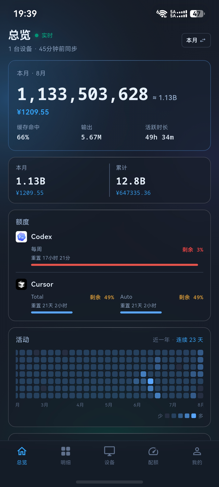
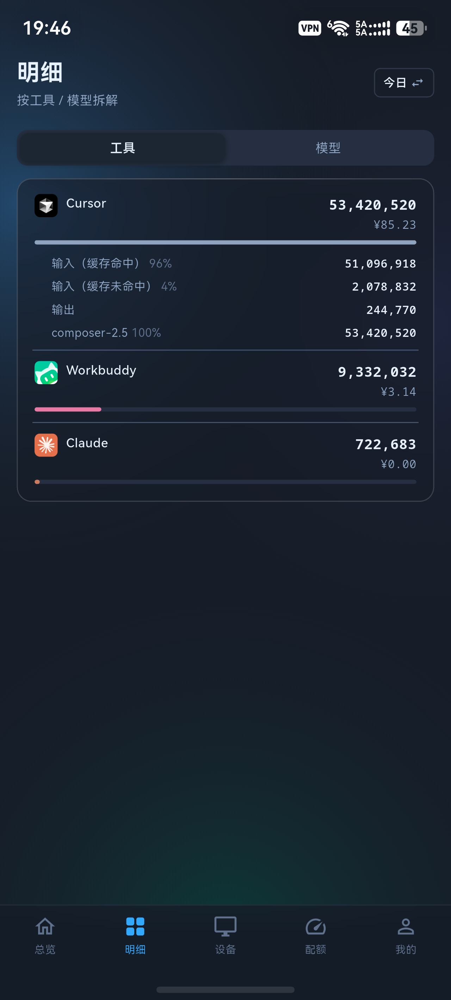
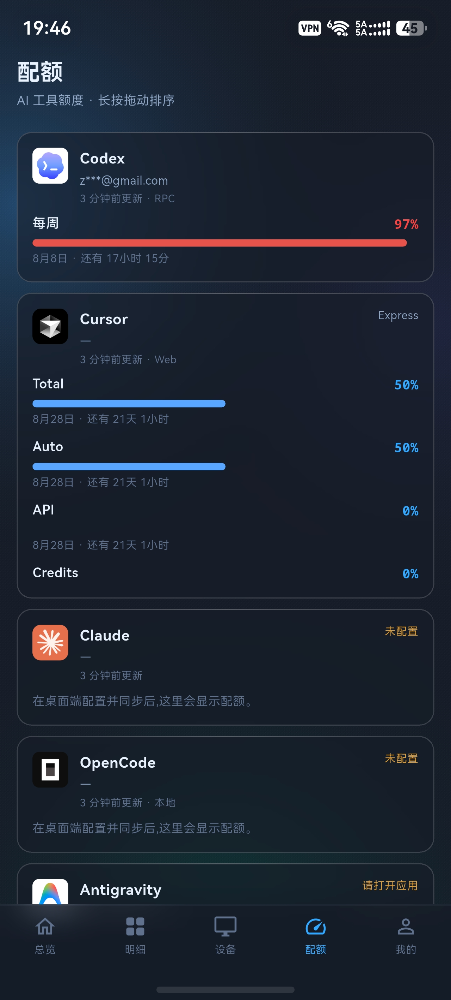
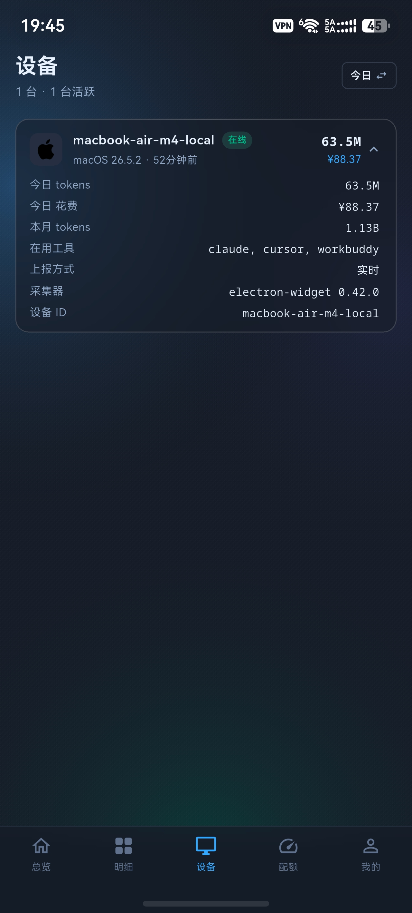
手机端只查看你授权同步的聚合数据，不读取手机里的 AI 账号、提示词或日志。
ZT Monitor 把实时用量、真实成本、账户额度、历史趋势和多设备状态放在同一套视图里。从今天用了多少，到哪次会话最贵，都能继续往下看。
每轮对话后数秒刷新。今日、本月、累计 Token 与美元成本，Claude、Codex、Cursor 等账户的 session／周／月额度，以及设备活跃状态都在首页直接呈现。
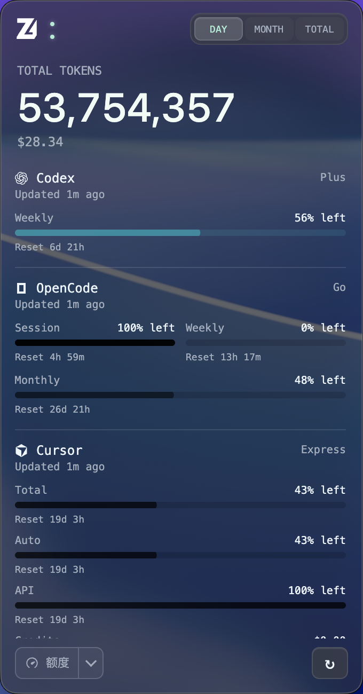
先看哪个工具花得最多，再进入模型、session 或项目。支持展开单次回复的输入、输出、缓存、推理 Token 与工具调用，定位成本不再靠猜。
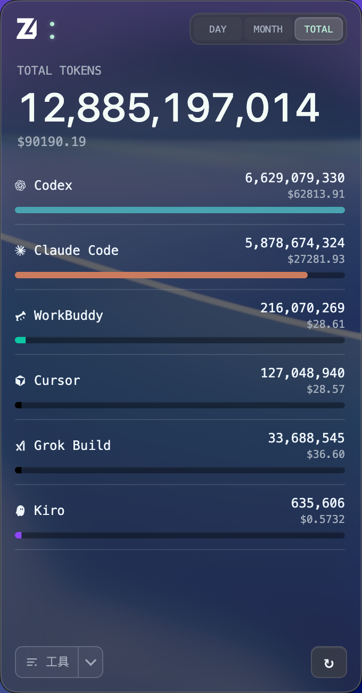
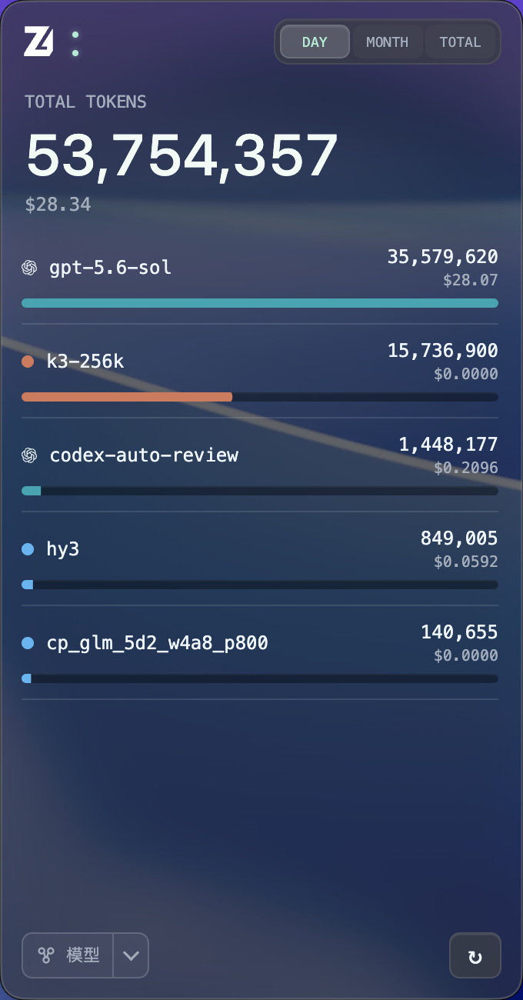
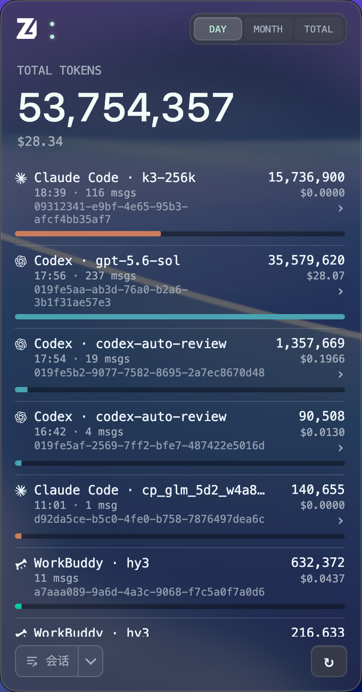
按 7 天、30 天、90 天或全年查看；支持按工具或模型堆叠，并在柱状图与 K 线之间切换。
Claude Code、Codex、OpenCode 支持 session 排名与明细。按消息数、模型、Token 和成本快速找到最重的一次对话；明细始终只在本机读取。
macOS、Windows、Linux 与无界面 Agent 都能上报聚合数据。SSE 把一台设备的变化在数秒内推送到其他桌面端，以及 Android／HarmonyOS 查看端。
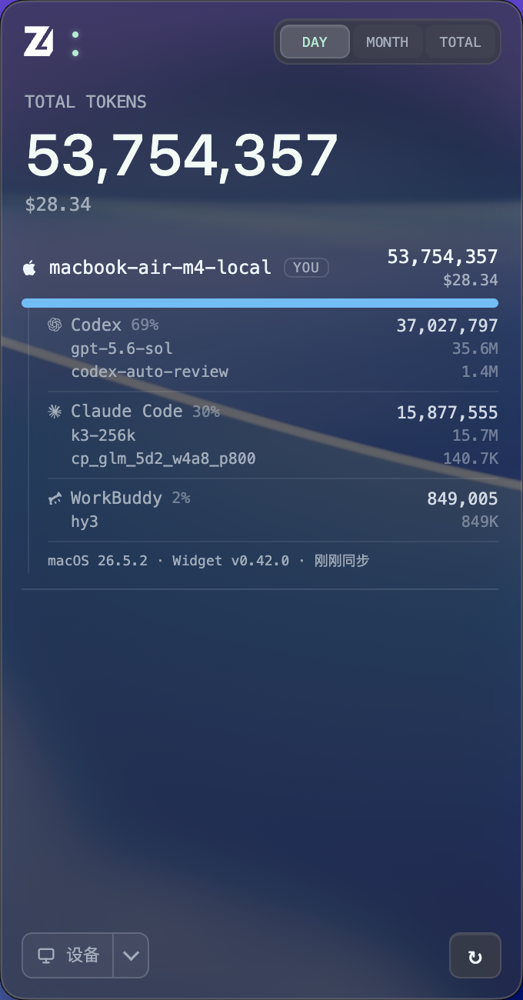
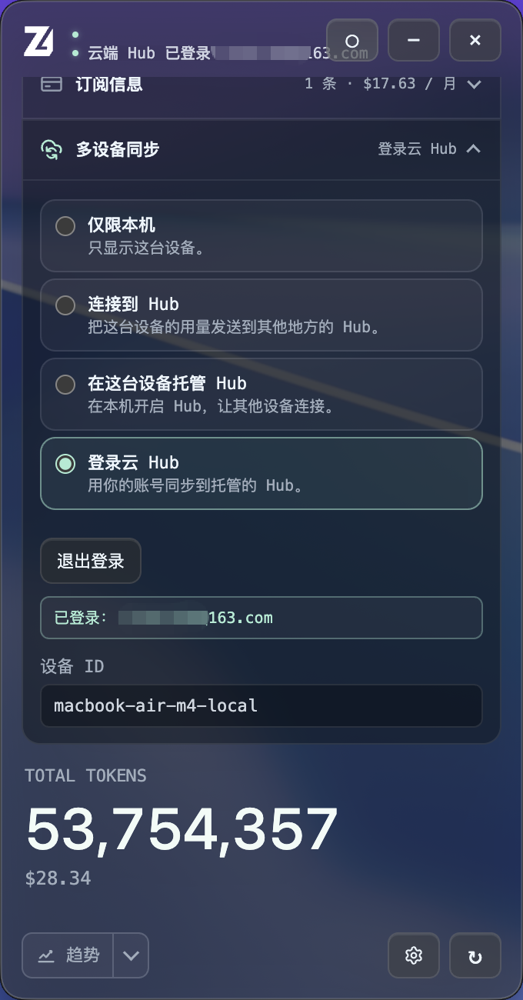
单机使用不需要服务器。提示词、回复、源代码和文件内容始终留在设备上；开启同步时只传聚合后的用量、成本、额度与设备状态。Hub 可以托管在自己的电脑、Node 服务或 Cloudflare Worker。
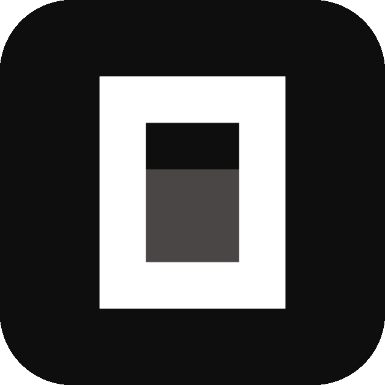
OpenCode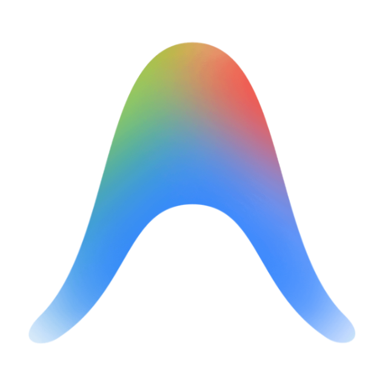
Antigravity Kimi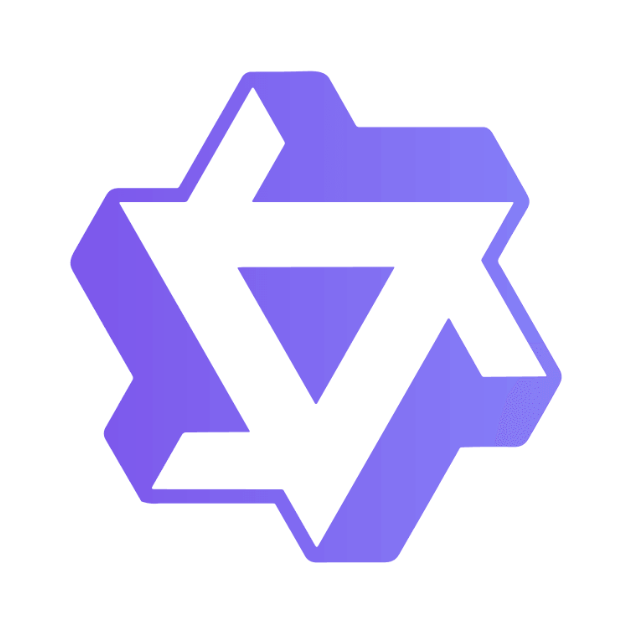
Qwen +20手机端不是缩小版桌面，也不会读取手机里的 AI 账号或日志。它只接收你授权同步的聚合数据，为离开工位后的快速查看重新组织信息。
读取本机 AI 工具使用日志，3–5 秒刷新用量；提示词、回复与源码不离开设备。
可选连接自建 Hub，只同步用量、成本、额度与设备状态，并通过 SSE 实时推送。
其他电脑与 Android／HarmonyOS 内测版同步看到最新汇总；iOS 后续推出。
桌面安装包自动读取 GitHub 最新 Release。Android 内测版可扫码直接下载；鸿蒙扫码联系加入内测社群；iOS App 后续推出。
获取最新版本正在识别当前设备最新稳定版 · 查看更新日志
Apple Silicon / Intel
Windows 10+ · x64

扫码直接下载安装包

扫码联系加入内测社群
后续推出
AppImage · x64